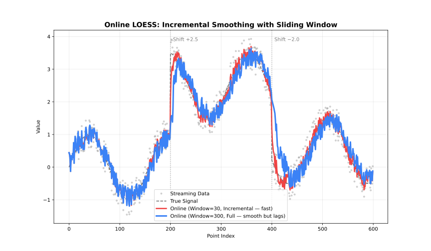

Online Adapter
Incremental updates with a sliding window for real-time data.
When to Use
- Data arrives incrementally (sensors, streams)
- Need real-time smoothed values
- Fixed memory budget

Parameters
| Parameter | Default | Description |
|---|---|---|
window_capacity | 1000 | Max points in window |
min_points | 3 | Points before output starts |
update_mode | "incremental" | Update strategy |
Update Modes
| Mode | Behavior | Speed |
|---|---|---|
"incremental" | Update only affected fits | Faster |
"full" | Recompute entire window | More accurate |
Example
using FastLOESS
using Random, Statistics
rng = MersenneTwister(42)
x = collect(range(0, 2π, length=100))
y = sin.(x) .+ randn(rng, 100) .* 0.3
model = OnlineLoess(;
fraction=0.2,
iterations=1,
window_capacity=100,
min_points=5,
update_mode="incremental"
)
for i in eachindex(x)
result = add_point(model, x[i], y[i])
if result !== nothing
println("Current smoothed value: ", result.y)
end
endCurrent smoothed value: 0.23103531694201596
Current smoothed value: 0.4962273769575686
Current smoothed value: 0.6767458589597115
Current smoothed value: 0.41363571386216635
Current smoothed value: 0.31508056492212055
Current smoothed value: 0.2833197903349513
Current smoothed value: 0.5294724551049306
Current smoothed value: 0.38668564637956704
Current smoothed value: 0.8219493564299335
Current smoothed value: 0.34011914867741216
Current smoothed value: 0.8292168395201815
Current smoothed value: 0.7381343500968887
Current smoothed value: 0.3165147382326843
Current smoothed value: 0.834019724236116
Current smoothed value: 0.5039203125884235
Current smoothed value: 0.5391565660838763
Current smoothed value: 1.1421169247961624
Current smoothed value: 1.2134638310800094
Current smoothed value: 1.228106223703212
Current smoothed value: 1.4485924682925635
Current smoothed value: 1.445067588227494
Current smoothed value: 1.2041713090108348
Current smoothed value: 0.8142212274421042
Current smoothed value: 0.7731238000624838
Current smoothed value: 1.3498036162564775
Current smoothed value: 0.9761779802163372
Current smoothed value: 1.003413457850302
Current smoothed value: 0.9529502695899669
Current smoothed value: 0.9003518733803255
Current smoothed value: 1.207997542032794
Current smoothed value: 1.1001557854215631
Current smoothed value: 0.9438162398646922
Current smoothed value: 0.8091363944567844
Current smoothed value: 0.881087189010325
Current smoothed value: 0.6844356300798254
Current smoothed value: 0.768673716342522
Current smoothed value: 0.034491666265786404
Current smoothed value: 0.24835986280311223
Current smoothed value: 0.19063654027069066
Current smoothed value: 0.533256005362748
Current smoothed value: 0.4055339287726898
Current smoothed value: 0.6093336005332792
Current smoothed value: 0.4884465667774387
Current smoothed value: 0.24096058452571567
Current smoothed value: 0.4327035370626663
Current smoothed value: 0.2112999936422283
Current smoothed value: 0.4319224072059482
Current smoothed value: -0.0048660466226964376
Current smoothed value: -0.32232651473982016
Current smoothed value: -0.1906399961727731
Current smoothed value: -0.029466111723609908
Current smoothed value: -0.16083393508478086
Current smoothed value: -0.29446387943615665
Current smoothed value: -0.3175688027076373
Current smoothed value: -0.2840870825951614
Current smoothed value: -0.6850329171824012
Current smoothed value: -0.51627784505936
Current smoothed value: -0.6373183118705125
Current smoothed value: -0.25279845643408244
Current smoothed value: -0.4733209614299019
Current smoothed value: -0.3564649076987626
Current smoothed value: -0.8499604790772851
Current smoothed value: -0.6687143870709868
Current smoothed value: -1.2771179047235763
Current smoothed value: -1.0514685440601867
Current smoothed value: -1.1258555860327597
Current smoothed value: -0.8014034976153226
Current smoothed value: -0.6210676783618992
Current smoothed value: -0.8489356725638791
Current smoothed value: -0.6263351792161803
Current smoothed value: -0.7437439392240595
Current smoothed value: -0.7635268288467335
Current smoothed value: -0.6040610413314221
Current smoothed value: -0.8125152992483331
Current smoothed value: -0.9363327626290119
Current smoothed value: -0.988814089921961
Current smoothed value: -0.7740731293701648
Current smoothed value: -1.0057526948531592
Current smoothed value: -0.9834244402540885
Current smoothed value: -1.0167449823520385
Current smoothed value: -0.7964302232547509
Current smoothed value: -0.6480443814025172
Current smoothed value: -0.6513545612749726
Current smoothed value: -0.8951449762415924
Current smoothed value: -0.5081265069263315
Current smoothed value: -0.9009565688206698
Current smoothed value: -0.7857945215666773
Current smoothed value: -0.5775131782189133
Current smoothed value: -0.7344624382247988
Current smoothed value: -0.5889042345121765
Current smoothed value: -0.622272477245056
Current smoothed value: -0.39725189218080537
Current smoothed value: -0.07621324741402102
Current smoothed value: -0.28065279178009567
Current smoothed value: -0.053882234900303236
Current smoothed value: -0.22293415103615674